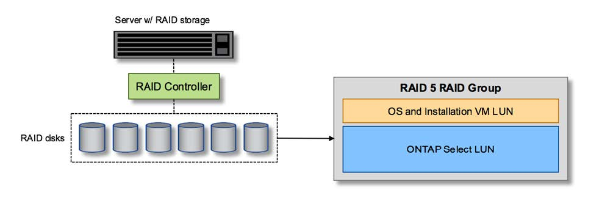

发行说明
发行说明
用于本地连接存储的硬件 RAID 服务
 建议更改
建议更改
如果有可用的硬件 RAID 控制器， ONTAP Select 可以将 RAID 服务移至硬件控制器，以提高写入性能并防止物理驱动器出现故障。因此， ONTAP Select 集群中所有节点的 RAID 保护由本地连接的 RAID 控制器提供，而不是通过 ONTAP 软件 RAID 提供。

|
ONTAP Select 数据聚合配置为使用 RAID 0 ，因为物理 RAID 控制器正在为底层驱动器提供 RAID 条带化。不支持其他 RAID 级别。 |
本地连接存储的 RAID 控制器配置
为 ONTAP Select 提供后备存储的所有本地连接磁盘都必须位于 RAID 控制器后面。大多数商用服务器都随附多个 RAID 控制器选项，价格各不相同，每个控制器选项的功能级别各不相同。其目的是支持尽可能多的这些选项，前提是它们满足控制器上的某些最低要求。
管理 ONTAP Select 磁盘的 RAID 控制器必须满足以下要求：
-
硬件 RAID 控制器必须具有电池备份单元（ BBU ）或闪存备份写入缓存（ FBWC ），并支持 12 Gbps 的吞吐量。
-
RAID 控制器必须支持至少可承受一个或两个磁盘故障的模式（ RAID 5 和 RAID 6 ）。
-
驱动器缓存必须设置为已禁用。
-
必须将写入策略配置为回写模式，并在发生 BBU 或闪存故障时执行回退。
-
读取的 I/O 策略必须设置为缓存。
所有为 ONTAP Select 提供后备存储的本地连接磁盘都必须置于运行 RAID 5 或 RAID 6 的 RAID 组中。对于 SAS 驱动器和 SSD ，使用最多包含 24 个驱动器的 RAID 组可以使 ONTAP 获得将传入读取请求分散到更多磁盘的优势。这样可以显著提高性能。在 SAS/SSD 配置中，对单 LUN 配置和多 LUN 配置执行了性能测试。没有发现显著的差异，因此，为了简单起见， NetApp 建议创建最少数量的 LUN 来满足您的配置需求。
NL-SAS 和 SATA 驱动器需要一组不同的最佳实践。出于性能原因，最小磁盘数仍为 8 个，但 RAID 组大小不应超过 12 个驱动器。NetApp 还建议每个 RAID 组使用一个备用磁盘；但是，可以使用所有 RAID 组的全局备用磁盘。例如，您可以为每三个 RAID 组使用两个备用磁盘，每个 RAID 组包含 8 到 12 个驱动器。
|
|
旧版 ESX 的最大块区和数据存储库大小为 64 TB ，这可能会影响支持这些大容量驱动器提供的总原始容量所需的 LUN 数量。 |
RAID模式
许多 RAID 控制器最多支持三种操作模式，每种模式都表示写入请求所采用的数据路径存在显著差异。这三种模式如下：
-
直写。所有传入的 I/O 请求都会写入 RAID 控制器缓存，然后立即转储到磁盘，然后再向主机确认该请求。
-
写入。所有传入的 I/O 请求都会直接写入磁盘，从而绕过 RAID 控制器缓存。
-
回写。所有传入的 I/O 请求都会直接写入控制器缓存，并立即确认回主机。使用控制器异步将数据块转储到磁盘。
回写模式提供最短的数据路径，在数据块进入缓存后立即进行 I/O 确认。此模式可为混合读 / 写工作负载提供最低延迟和最高吞吐量。但是，如果不存在 BBU 或非易失性闪存技术，则在系统在此模式下运行时发生电源故障时，用户将面临丢失数据的风险。
ONTAP Select 要求具有电池备份或闪存单元；因此，我们可以确信，在发生此类故障时，缓存的块会转储到磁盘。因此， RAID 控制器必须配置为回写模式。
ONTAP Select 和操作系统之间共享的本地磁盘
最常见的服务器配置是，所有本地连接的磁盘轴都位于一个 RAID 控制器后面。您应至少配置两个 LUN ：一个用于虚拟机管理程序，一个用于 ONTAP Select VM 。
例如，假设一个 HP DL380 g8 具有六个内部驱动器和一个智能阵列 P420i RAID 控制器。所有内部驱动器均由此 RAID 控制器管理，系统上不存在任何其他存储。
下图显示了这种配置。在此示例中，系统上不存在其他存储；因此，虚拟机管理程序必须与 ONTAP Select 节点共享存储。
-
仅使用 RAID 管理磁盘轴的服务器 LUN 配置 *

通过从与 ONTAP Select 相同的 RAID 组配置操作系统 LUN ，虚拟机管理程序操作系统（以及也从该存储配置的任何客户端虚拟机）可以从 RAID 保护中受益。此配置可防止单驱动器故障导致整个系统停机。
在 ONTAP Select 和操作系统之间拆分的本地磁盘
服务器供应商提供的另一种可能的配置包括为系统配置多个 RAID 或磁盘控制器。在此配置中，一组磁盘由一个磁盘控制器管理，该控制器可能提供 RAID 服务，也可能不提供 RAID 服务。第二组磁盘由硬件 RAID 控制器管理，该控制器能够提供 RAID 5/6 服务。
在这种配置模式下，可提供 RAID 5/6 服务的 RAID 控制器后面的一组磁盘轴应仅供 ONTAP Select VM 使用。根据所管理的总存储容量，您应将磁盘轴配置为一个或多个 RAID 组以及一个或多个 LUN 。然后，这些 LUN 将用于创建一个或多个数据存储库，其中所有数据存储库均受 RAID 控制器保护。
第一组磁盘是为虚拟机管理程序操作系统以及未使用 ONTAP 存储的任何客户端虚拟机预留的，如下图所示。
-
混合 RAID/ 非 RAID 系统上的服务器 LUN 配置 *

多个 LUN
在两种情况下，单 RAID 组 / 单 LUN 配置必须更改。使用 NL-SAS 或 SATA 驱动器时， RAID 组大小不得超过 12 个驱动器。此外，一个 LUN 可能会大于底层虚拟机管理程序存储限制，可以是单个文件系统块区最大大小，也可以是存储池总最大大小。然后，必须将底层物理存储拆分为多个 LUN ，才能成功创建文件系统。
VMware vSphere 虚拟机文件系统限制
在某些 ESX 版本上，数据存储库的最大大小为 64 TB 。
如果服务器连接的存储超过 64 TB ，则可能需要配置多个 LUN ，每个 LUN 都小于 64 TB 。创建多个 RAID 组以缩短 SATA/NL-SAS 驱动器的 RAID 重建时间也会导致配置多个 LUN 。
如果需要多个 LUN ，则需要考虑的一个主要问题是确保这些 LUN 的性能相似且一致。如果要在一个 ONTAP 聚合中使用所有 LUN ，则这一点尤其重要。或者，如果一个或多个 LUN 的一个子集具有截然不同的性能配置文件，我们强烈建议将这些 LUN 隔离在一个单独的 ONTAP 聚合中。
可以使用多个文件系统块区来创建一个数据存储库，该数据存储库的大小不超过数据存储库的最大大小。要限制需要 ONTAP Select 许可证的容量，请确保在集群安装期间指定容量上限。此功能允许 ONTAP Select 仅使用数据存储库中的一部分空间（因此需要许可证）。
或者，也可以先在一个 LUN 上创建一个数据存储库。如果需要更多空间，并需要更大的 ONTAP Select 容量许可证，则可以将该空间作为块区添加到同一个数据存储库中，但不能超过数据存储库的最大大小。达到最大大小后，可以创建新的数据存储库并将其添加到 ONTAP Select 中。这两种类型的容量扩展操作均受支持，并且可以使用 ONTAP Deploy storage-add 功能来实现。可以将每个 ONTAP Select 节点配置为最多支持 400 TB 的存储。从多个数据存储库配置容量需要两步过程。
初始集群创建可用于创建占用初始数据存储库中部分或全部空间的 ONTAP Select 集群。第二步是使用其他数据存储库执行一个或多个容量添加操作，直到达到所需的总容量为止。有关此功能的详细信息，请参见一节 "增加存储容量"。
|
|
VMFS 开销不为零（请参见 "VMware 知识库 1001618"），并且尝试使用数据存储库报告为可用的整个空间会导致集群创建操作期间出现虚假错误。 |
每个数据存储库中会保留 2% 的未使用缓冲区。此空间不需要容量许可证，因为 ONTAP Select 不会使用此空间。只要未指定容量上限， ONTAP Deploy 就会自动计算缓冲区的确切 GB 数。如果指定了容量上限，则会首先强制实施该大小。如果容量上限大小不超过缓冲区大小，则集群创建将失败，并显示一条错误消息，指出可用作容量上限的正确最大大小参数：
“InvalidPoolCapacitySize: Invalid capacity specified for storage pool “ontap-select-storage-pool”, Specified value: 34334204 GB. Available (after leaving 2% overhead space): 30948”
新安装和现有 ONTAP Deploy 或 ONTAP Select VM 的 Storage vMotion 操作均支持 VMFS 6 。
VMware 不支持从 VMFS 5 原位升级到 VMFS 6 。因此， Storage vMotion 是唯一允许任何 VM 从 VMFS 5 数据存储库过渡到 VMFS 6 数据存储库的机制。但是，除了从 VMFS 5 过渡到 VMFS 6 的特定目的之外， ONTAP Select 和 ONTAP Deploy 对 Storage vMotion 的支持也有所扩展，以涵盖其他情形。
ONTAP Select 虚拟磁盘
ONTAP Select 的核心是为 ONTAP 提供一组从一个或多个存储池配置的虚拟磁盘。ONTAP 会提供一组虚拟磁盘，这些虚拟磁盘会被视为物理磁盘，而存储堆栈的其余部分则由虚拟机管理程序进行抽象化。下图更详细地显示了这种关系，突出显示了物理 RAID 控制器，虚拟机管理程序和 ONTAP Select VM 之间的关系。
-
RAID 组和 LUN 配置可通过服务器的 RAID 控制器软件进行。使用 VSAN 或外部阵列时不需要此配置。
-
存储池配置从虚拟机管理程序中进行。
-
虚拟磁盘由各个 VM 创建并拥有；在此示例中，虚拟磁盘由 ONTAP Select 创建并拥有。
-
虚拟磁盘到物理磁盘的映射 *

虚拟磁盘配置
为了提供更加简化的用户体验， ONTAP Select 管理工具 ONTAP Deploy 会自动从关联的存储池配置虚拟磁盘并将其连接到 ONTAP Select VM 。此操作会在初始设置期间以及存储添加操作期间自动执行。如果 ONTAP Select 节点属于 HA 对，则虚拟磁盘会自动分配给本地和镜像存储池。
ONTAP Select 会将底层连接的存储拆分为大小相等的虚拟磁盘，每个虚拟磁盘不超过 16 TB 。如果 ONTAP Select 节点属于 HA 对，则在每个集群节点上至少创建两个虚拟磁盘，并将其分配给要在镜像聚合中使用的本地丛和镜像丛。
例如， ONTAP Select 可以为数据存储库或 LUN 分配 31 天的数据存储库或 LUN （部署虚拟机并配置系统和根磁盘后剩余的空间）。然后，创建四个 ~7.75TB 虚拟磁盘并将其分配给相应的 ONTAP 本地丛和镜像丛。
|
|
向 ONTAP Select VM 添加容量可能会导致 VMDK 的大小不同。有关详细信息，请参见一节 "增加存储容量"。与 FAS 系统不同，同一聚合中可以存在不同大小的 VMDK 。ONTAP Select 会在这些 VMDK 之间使用 RAID 0 条带，从而可以完全使用每个 VMDK 中的所有空间，而不管其大小如何。 |
虚拟化 NVRAM
NetApp FAS 系统通常配备物理 NVRAM PCI 卡，这是一种包含非易失性闪存的高性能卡。此卡使 ONTAP 能够立即确认传入的写入操作并返回到客户端，从而显著提升写入性能。此外，它还可以计划在称为转存的过程中将修改后的数据块移回速度较慢的存储介质。
商用系统通常不安装此类设备。因此，此 NVRAM 卡的功能已虚拟化并置于 ONTAP Select 系统启动磁盘上的分区中。因此，放置实例的系统虚拟磁盘极为重要。这也是该产品要求为本地连接的存储配置提供具有弹性缓存的物理 RAID 控制器的原因。
NVRAM 放置在自己的 VMDK 上。通过将 NVRAM 拆分为自己的 VMDK ， ONTAP Select VM 可以使用 vNVMe 驱动程序与其 NVRAM VMDK 进行通信。此外，还要求 ONTAP Select VM 使用与 ESX 6.5 及更高版本兼容的硬件版本 13 。
介绍的数据路径： NVRAM 和 RAID 控制器
最好通过在写入请求进入系统时浏览写入请求所占用的数据路径来突出显示虚拟化 NVRAM 系统分区与 RAID 控制器之间的交互。
传入到 ONTAP Select VM 的写入请求将定向到 VM 的 NVRAM 分区。在虚拟化层，此分区位于 ONTAP Select 系统磁盘中，即连接到 ONTAP Select VM 的 VMDK 。在物理层，这些请求会缓存在本地 RAID 控制器中，就像所有针对底层磁盘轴的块更改一样。此时，写入操作将确认回主机。
此时，该块在物理上驻留在 RAID 控制器缓存中，等待转储到磁盘。从逻辑上讲，该块驻留在 NVRAM 中，等待转存到相应的用户数据磁盘。
由于更改后的块会自动存储在 RAID 控制器的本地缓存中，因此传入到 NVRAM 分区的写入操作会自动缓存并定期转储到物理存储介质。这一点不应与定期将 NVRAM 内容刷新回 ONTAP 数据磁盘混淆。这两个事件是不相关的，发生时间和频率不同。
下图显示了传入写入所采用的 I/O 路径。其中重点介绍了物理层（由 RAID 控制器缓存和磁盘表示）与虚拟层（由虚拟机的 NVRAM 和数据虚拟磁盘表示）之间的区别。
|
|
尽管 NVRAM VMDK 上更改的块会缓存在本地 RAID 控制器缓存中，但缓存无法识别 VM 构造或其虚拟磁盘。它会将所有更改过的块存储在系统上，其中 NVRAM 只是其中的一部分。如果虚拟机管理程序是从同一个后备磁盘轴配置的，则这包括绑定到该虚拟机管理程序的写入请求。 |
-
传入 ONTAP Select VM* 的写入

|
|
NVRAM 分区将在其自己的 VMDK 上分隔。该 VMDK 使用 ESX 6.5 或更高版本中提供的 vNVME 驱动程序进行连接。对于使用软件 RAID 的 ONTAP Select 安装来说，此更改最重要，因为这些安装不会从 RAID 控制器缓存中受益。 |